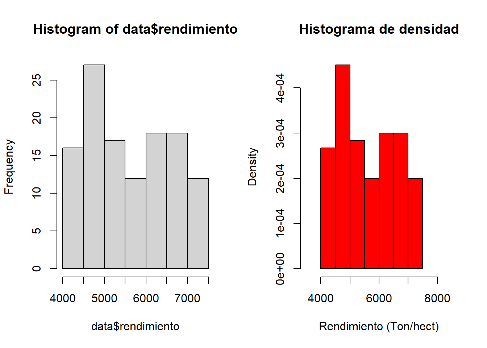

Capitulo 4 Visualización de datos en RStudio
En el laboratorio anterior aprendimos a importar una base de datos a R y a realizar una exploración básica de la información contenida en nuestra base de datos. Ahora, ha llegado del momento de seguir explorando nuestros datos pero de una manera diferente. En este laboratorio realizaremos una exploración visual de nuestros datos. Para ello aprenderemos una serie de gráficos básicos en R y luego los “enchularemos”. Al realizar gráficos podremos ver posibles patrones en nuestros datos, formas de las distribuciones de nuestras variables y posibles valores “extraños” o fuera de rango ( outliers ).
4.1 Gráfico de dispersión o Scatterplot
Un gráfico de dispersión es una visualización de datos bidimensionales que usa puntos para representar los valores obtenidos para dos variables diferentes: una graficada a lo largo del eje x y la otra graficada a lo largo del eje y.
Existen muchas maneras de crear un gráfico de dispersión en R. La función básica es plot(x,y).
Por ejemplo visualicemos las variables Temperatura (eje x) y rendimiento (eje y) de la base de datos utilizada en el laboratorio 3:
data <- read.csv("./datos/dataset.csv")
plot(data$Temperatura, data$rendimiento)Felicitaciones, acaban de generar el primero de muchos gráficos que aprenderán en este curso. Sin embargo, la tarea no está completa. Como podemos apreciar, el gráfico que nos entregó R es bastante “rústico.” Siempre intenten presentar sus datos de una forma atractiva. Esto puede marcar la diferencia entre un buen trabajo y un trabajo sobresaliente.
Afortunadamente, R nos permite “enchular” nuestros gráficos. Para ello debemos ingresar comandos específicos para cada una de las características que queremos modificar:
plot(data$Temperatura,data$rendimiento,
xlab = "Temperatura ambiental (Celcius)",
ylab = "Rendimiento (Ton/hect)",
xlim = c(9,18),
ylim = c(4000,8000),
main = "Mi primer grafico en R",
pch=20,
col="red",
cex=2,
cex.lab=1.2,
cex.axis=1.1)A simple vista, son múltiples los parámetros gráficos que hemos cambiado. A continuación, se detalla la lista de los parámetros utilizados y sus definiciones:
xlab= Permite modificar el nombre del eje xylab= Permite modificar el nombre del eje yxlim= Establece los limites del eje xylim= Establece los limites del eje ymain= Permite agregar un título a nuestro gráficopch= Permite modificar la forma de los puntos en nuestro gráficocol= Permite modificar el colorcex= Permite modificar el tamaño del texto
Para aprender sobre otros comandos que permiten modificar parámetros les sugerimos visitar el siguiente link.
Nunca olviden que aprender R implica un constante prueba y error, por lo cual ahora que tienen una lista de parámetros, comiencen a probar que sucede cuando cambian los valores de cada uno de ellos. No tengan miedo a equivocarse!
Hasta ahora hemos generados dos gráficos, sin embargo solo podemos ver uno a la vez. R proporciona los
comandos necesarios para ver más de un gráfico de forma simultánea. Con la función par(), podemos
incluir la opción mfrow=c() para crear una matriz de filas y columnas.
Utilicemos los dos scatterplot anteriores para generar una matriz gráfica que contenga dos gráficos ordenados en una fila y con dos columnas:
par(mfrow=c(1,2))
plot(data$Temperatura,data$rendimiento)
plot(data$Temperatura,data$rendimiento,
xlab = "Temperatura ambiental (Celcius)",
ylab = "Rendimiento (Ton/hect)",
xlim = c(9,18),
ylim = c(4000,8000),
main = "Mi primer grafico en R",
pch=20,
col="red",
cex=1.5,
cex.lab=1.0,
cex.axis=1.0)Fantástico! Tenemos ambos scatterplot graficados al mismo tiempo, uno al lado del otro. Ahora bien, en caso de que quisiéramos que estén un scatterplot sobre el otro, ¿¿como lo harían??
4.2 Diagrama de cajas o Boxplot
Un diagrama de cajas es un gráfico que está basado en cuartiles y mediante el cual se visualiza la
distribución de un conjunto de datos. Está compuesto por un rectángulo (la «caja») y dos brazos (los «bigotes»). Los diagramas de caja se pueden crear para variables individuales o para grupos de variables.
La función es boxplot(x), donde x es nuestra variable a graficar:
Generemos un gráfico de cajas para la información contenida en la variable rendimiento:
boxplot(data$rendimiento)Ahora, generemos el diagrama para la información contenida en la variable rendimiento según la región en la cual se realizó el muestreo (grupo de variable):
boxplot(data$rendimiento ~ data$Region)En caso de que quisiéramos enchular nuestro gráfico de cajas con dos variables, solamente debemos modificar los parámetros gráficos:
#plot(data$rendimiento ~ data$Region,
#xlab = "Region",
#ylab = "Rendimiento (Ton/hect)",
#ylim = c(4000,8000),
#main = "Diagrama de cajas",
#pch=18,
#col="red",
#col.main="red",
#cex=2,
#cex.main=1.5,
#cex.lab=1.0,
#cex.axis=1.0)4.3 Histogramas
Un histograma es una representación visual de la distribución de un conjunto de datos. Como tal, la forma de un histograma es su característica más obvia e informativa: nos permite ver fácilmente dónde está el medio en su distribución de datos, qué tan cerca están los datos de este medio y dónde se encuentran posibles valores atípicos.
El histograma consiste en un eje x, un eje y, además de varias barras de diferentes alturas. El eje y muestra con qué frecuencia (número de veces que se repite una observación) se producen los valores en el eje, mientras que las barras agrupan rangos de valores o categorías continuas en el eje x (intervalos). Esto explica por qué los histogramas se llaman “histograma de frecuencia.”
La función es hist(x), donde x es nuestra variable a graficar.
Generemos un histograma de frecuencias para la información contenida en la variable rendimiento:
hist(data$rendimiento)Al igual que los gráficos anteriores, R nos permite modificar parámetros gráficos de los histograma de
frecuencia. Por ejemplo, podemos especificar el número de intervalos en las cuales queremos que se agrupen
nuestros datos. Para ello utilizamos el comando breaks=.
Generemos un histograma de frecuencias para la información contenida en la variable rendimiento pero que esté agrupada solamente en 4 intervalos:
hist(data$rendimiento,breaks=4)Intentemos algo más que nos servirá para los próximos laboratorios. En algunas ocasiones, estaremos más
interesados en la densidad (probabilidad relativa de un dato) que en la frecuencia de nuestros datos. En lugar
de contar el número de puntos de datos por intervalo, R puede dar las densidades de probabilidad usando la
opción freq= FALSE, lo cual nos permite normalizar el histograma de modo que el área total es igual a 1.
Ahora el eje y está etiquetado como densidad en lugar de frecuencia.
Modifiquemos nuestro histograma de frecuencia anterior por un histograma de densidad y grafiquemos uno al lado del otro:
par(mfrow=c(1,2))
hist(data$rendimiento)
hist(data$rendimiento,
main="Histograma de densidad",
xlab="Rendimiento (Ton/hect)",
xlim=c(3500,8500),
col="red",
freq=FALSE,
cex.main=1.2,
cex.lab=1.0,
cex.axis=1.0,
Freq=FALSE)## Warning in plot.window(xlim, ylim, "", ...): "Freq" is not a graphical parameter## Warning in title(main = main, sub = sub, xlab = xlab, ylab = ylab, ...): "Freq"
## is not a graphical parameter## Warning in axis(1, ...): "Freq" is not a graphical parameter## Warning in axis(2, ...): "Freq" is not a graphical parameter
4.4 Ejercicios para la casa
Generar un gráfico que permita visualizar la relación entre las variables Temperatura y rendimiento. El gráfico debe contener solamente los datos obtenidos de las regiones del Maule y Araucanía.
Generar un histograma de frecuencia con los rendimientos superiores a 5000 Toneladas/hectárea.
Generar un gráfico de cajas para la variedad 1 que muestre solamente los rendimientos superiores a 5000 Toneladas/hectárea.